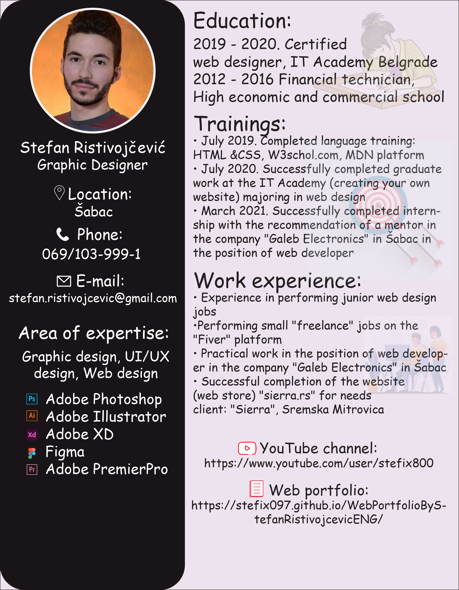
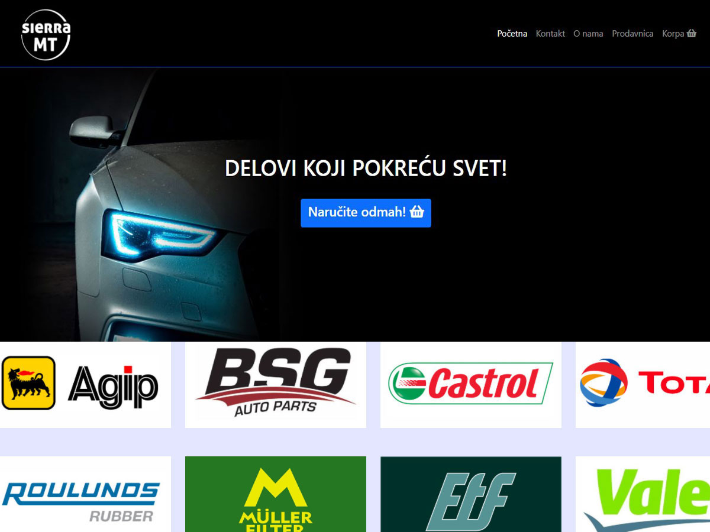
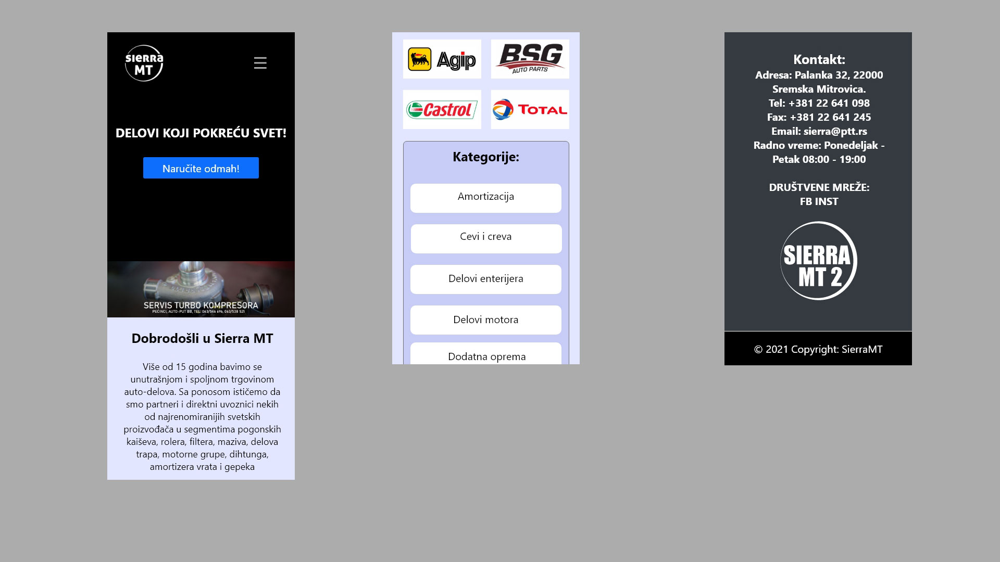
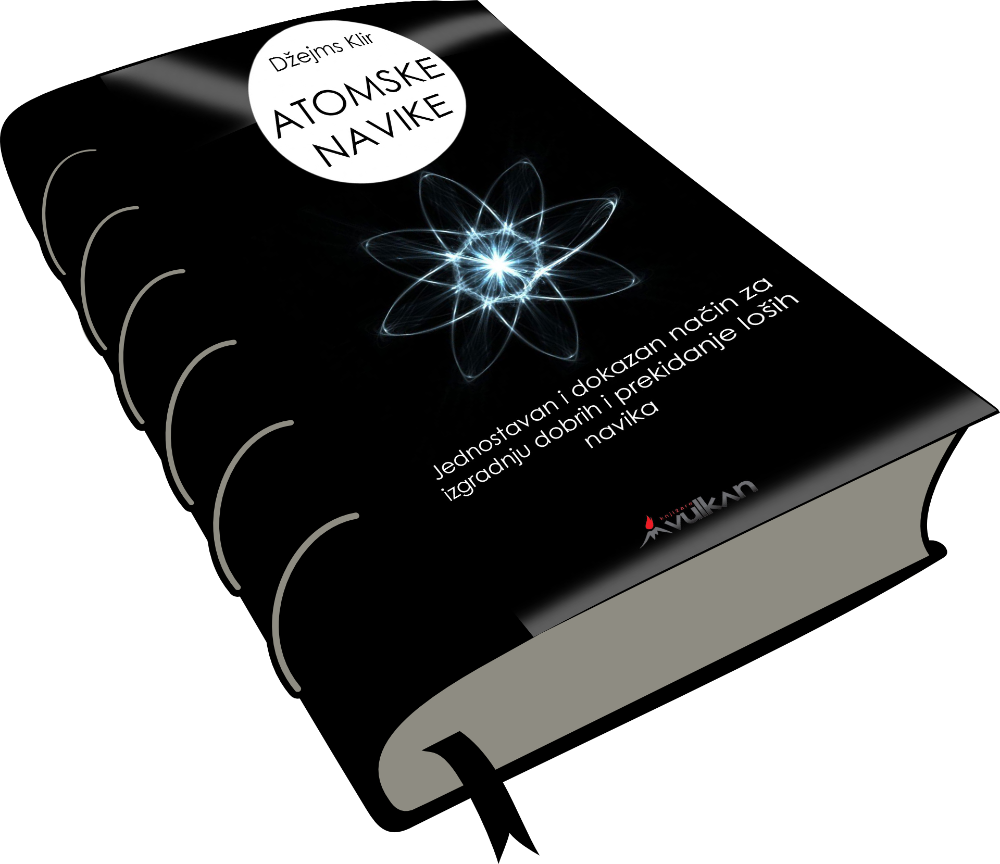
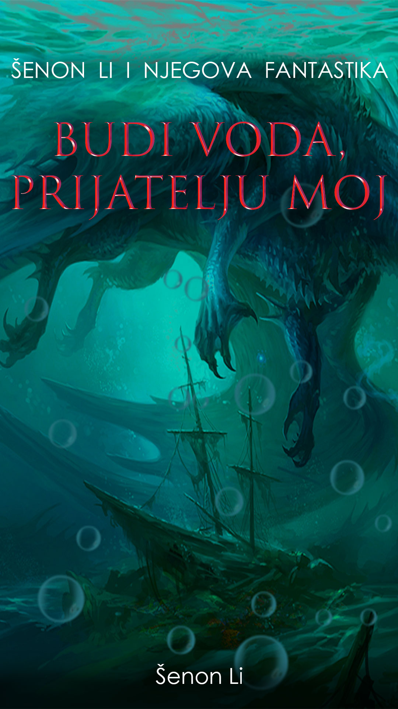
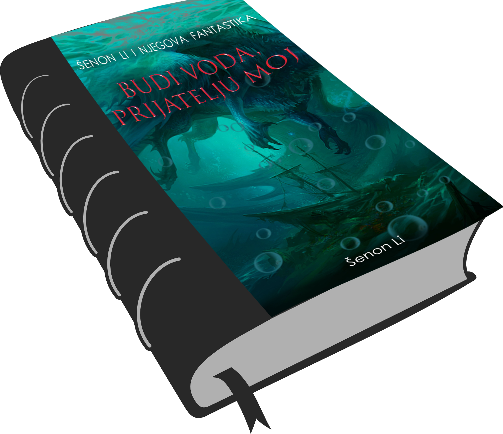
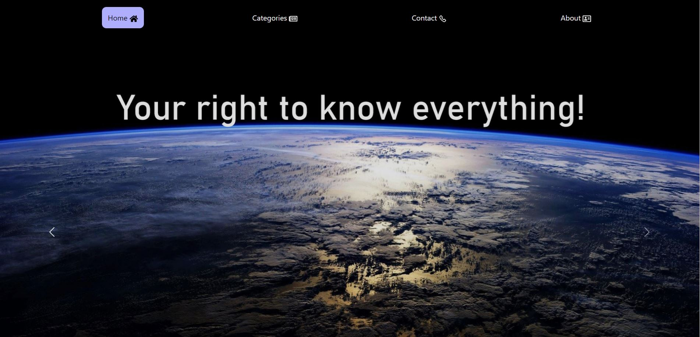
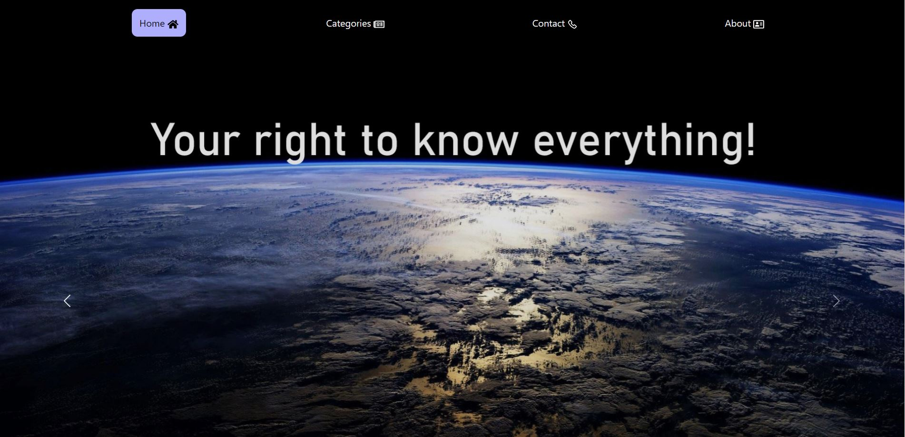
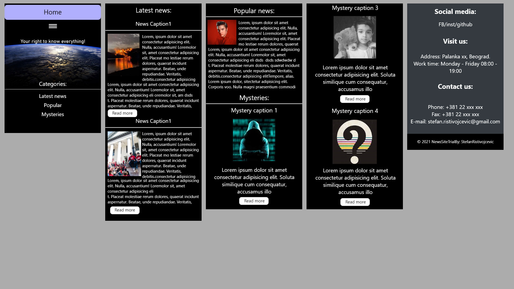

Web portfolio
WHO AM I
AND WHAT I DO?
My name is Stefan Ristivojčević and I deal with web design, web development and graphic design.
I graduated from the IT Academy in Belgrade, majoring in web design, and to define content on the Internet I use:
HTML, CSS, JavaScript, Bootstrap, WordPress(done theme and custom theme), Adobe Photoshop, Adobe Illustrator, Adobe XD.
I would say for myself that I am: a responsible person, dedicated to work and motivated to acquire new knowledge!
For more of my graphic design work you can visit my YouTube channel:
CV:

Download CV in PDF file

Online auto parts store built in WordPress from scratch (custom theme). The site contains a lot of categories and subcategories that are necessary for a better classification of the articles themselves. This site was created for the needs of the client and is currently waiting for more items to be added. The site is responsive, adapted for mobile devices and is currently hosted by "unlimited.rs" and you can visit it at the link below!
Desktop:


Mobile users:

SierraMT home page prototype done in Adobe XD, desktop (1920) and mobile (360) variants.



 

A test site of an informative nature created for presentation purposes. The descriptive languages HTML and CSS were used to define the content of the site, and very little Java Script programming language. The site is responsive, it is hosted on GitHub and you can visit it at the link below!
Desktop:


Mobile users:

NewsSite home page prototype made in Adobe XD, desktop (1920) and mobile (360) versions.